1과목: 환경생태학개론
1. 조간대 패각류의 공기 중 노출에 관한 설명으로 틀린 것은?
2. 생태계에서 한 생물이 차지하는 공간적 위치와 기능적 역할 또는 생태계에서 한 종과 다른 종의 상대적 위치로 설명되는 용어는?
3. 다음 중 일반적으로 에너지 효율이 가장 높은 단계에 속하는 종은?
4. 아래의 설명에 해당하는 분야는?
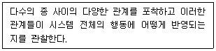
5. 해양으로 영양 염류가 과다하게 유입되었을 때 일어나는 생물학적 변화와 거리가 가장 먼 것은?
6. 다음 중 생물다양성 및 환경보호와 관련된 국제기구가 아닌 것은?
7. 열대산림에서 물질순환을 돕는 생물적 작용에 대한 설명이 틀린 것은?
8. 식물에서는 종자의 전파양식이나 무성번식에 의해 일어나며 동물은 사회적 행동에 의해 동일 종의 개체끼리 유대관계를 형성하기 때문에 나타나는 개체군의 공간분포양식은?
9. 생태계의 먹이연쇄에 관한 설명으로 틀린 것은?
10. 미생물 또는 화산활동 및 번개의 방전 등에 의해 생태계에 유입되는 물질을 생성하는 생물지화학적 순환(biogeochemical cycle)은?
11. 생산자의 광합성 및 화학합성에 의해 방사에너지가 먹이로 이용될 수 있는 유기물의 형태로 고정되는 속도를 무엇이라 하는가?
12. 생물의 특성 중 외부 환경이 달라져도 생물체 내부의 환경은 일정하게 유지되는 경향을 무엇이라고 하는가?
13. 습지생태계에 대한 설명으로 거리가 가장 먼 것은?
14. 생태계 손상, 경관 저해, 관광수입 감소 등의 막대한 피해를 일으킨 유류 유출 사고에 해당하지 않는 것은?
15. 계절 변화에 대한 과학적 연구인 화력학(phenology)에 대한 설명으로 틀린 것은?
16. 경제 활동의 부작용으로 초래되는 비정상적인 군집의 형성 사례가 아닌 것은?
17. 생물종간 상호작용 중 A가 B로부터 일방적으로 이익을 얻으며 B에게 피해를 주는 관계는?
18. 생물종 다양성이 감소하는 원인으로 거리가 가장 먼 것은?
19. 연안지역을 육지화 시키는 간척(reclamation)에 의해 나타나는 효과로 거리가 가장 먼 것은?
20. 생태계 유형에 따른 현존식생도의 범례 중 '자연식생'에 해당되지 않는 것은?
2과목: 환경계획학
21. 생태·자연도 작성 시 권역 구분이 옳은 것은? (단, 각 등급 명칭에서 '권역' 표시는 생략한다.)
22. 도시 생태계의 일반적인 특징이 아닌 것은?
23. 자연환경보전법에 따른 자연환경조사와 관련하여, 아래의 빈 칸에 들어갈 내용이 모두 옳은 것은?
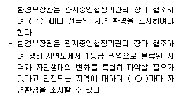
24. 생태공원 조성의 기본 이념이 아닌 것은?
25. 환경과 인간의 상호관계에 대한 설명이 틀린 것은?
26. 환경계획 및 설계 시 고려되어야 할 사항으로 거리가 가장 먼 것은?
27. 자연환경보전법상 정의에 따라 아래의 설명에 해당하는 것은?
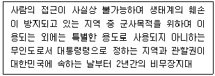
28. 열역학 제2법칙과 관련한 엔트로피에 대한 설명이 틀린 것은?
29. 다음 중 벽면녹화용 식물의 권장 수종으로 거리가 가장 먼 것은?
30. 유네스코의 인간과 생물권(Man and Biosphere) 계획에서 설정한 생물권 보전지역의 구분에 해당하지 않는 것은?
31. 정부와 시민사회가 협력하여 환경문제 등의 사회문제를 해결하는 것으로, 공유된 목적에 의해 일어나는 활동을 의미하는 것은?
32. 국토의 계획 및 이용에 관한 법령상 도시·군 기본계획에 대하여 타당성을 전반적으로 재검토하여 정비하여야 하는 기간 기준은?
33. 토지의 적성평가에 대한 설명이 틀린 것은?
34. 경제협력개발기구(OECD)는 지속가능한 지표를 개발하기 위한 공통의 접근방법으로 압력(P)-상태(S)-대응(R) 평가체제를 도입하였다. 도시 내 생물다양성 증진을 위한 환경계획 수립에서 압력-상태-대응 평가체계의 적용사례를 옳게 연결한 것은?
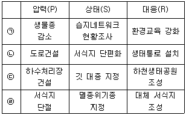
35. 도시·군관리계획결정으로 지정하는 취락지구의 세분 중, 개발제한구역안의 취락을 정비하기 위하여 필요한 지구는?
36. 도시·군관리계획 수립 대상지역의 일부에 대하여 토지 이용을 합리화하고 그 기능을 증진시키며 미관을 개선하고 양호한 환경을 확보하며, 그 지역을 체계적·계획적으로 관리하기 위하여 수립하는 도시·군관리계획을 무엇이라고 하는가?
37. 생태네트워크의 유형 분류 중 대상으로 하는 공간 특성에 따른 분류에 해당하지 않는 것은?
38. 도시를 하나의 유기적 복합체로 보아 다양한 도시 활동과 공간 구조가 생태계의 속성인 다양성, 자립성, 순환성, 안정성 등을 포함하는 인간과 자연이 공존할 수 있는 환경 친화적인 도시를 뜻하며, 핀란드 헬싱키의 비키(Viikki)가 대표적인 사례 지역인 것은?
39. 생태발자국(Ecological Footprint)에 대한 설명이 틀린 것은?
40. 복원(restoration), 복구(rehabilitation), 대체(replacement)에 대한 설명이 틀린 것은?
3과목: 생태복원공학
41. 매립지 복원공법 중, 하부층(세립 미사질 토층)에 파일을 박아 하단부 투수층까지 연결한 후 파일 파이프 안에 모래, 사질양토, 자갈 등을 넣어 배수를 원활히 하는 방법은?
42. 다음 중 식충식물이 아닌 것은?
43. 토양개량에 쓰이는 자재 중 피토모스에 대한 설명으로 틀린 것은?
44. 포유류의 멸종위기종 증식 및 복원을 위한 기술 중에서 사육 시설 개발, 인공 증식 시스템 확립, 병리학적 위기 관리 체계 등이 속하는 분야는?
45. 강산성 토양에서 과잉되기 쉬운 성분으로, 이 성분의 과잉으로 인해 P 결핍 및 Mn 과잉, K 결핍 등에 의해 영양장해가 발생함으로써 식물에 막대한 피해를 주는 것은?
46. 야생동물의 주요 이동 목적으로 거리가 가장 먼 것은?
47. 다음 지역에 대해 구형분할(矩形分割)법을 이용하여 구한 체적(m3)은? (단, 정사각형의 한 변의 길이는 10m 이다.)
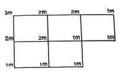
48. 생태통로 조성 시 서식 공간 보호를 위한 조치로 바람직하지 않은 것은?
49. 생태통로에 의하여 보호받을 수 있는 종과 거리가 먼 것은?
50. 환경포텐셜에 관한 설명 중 옳은 것은?
51. 생태적 발자국(ecologocal footprint)의 분석을 위해 사용하는 토지분류의 카테고리가 아닌 것은?
52. 기후인자가 토양 생성에 미치는 영향에 대한 설명으로 틀린 것은?
53. 생태계의 복원원칙에 대한 설명으로 옳은 것은?
54. 야생조류의 서식처 복원에 있어 인간과의 거리관계에 대한 설명이 옳은 것은?
55. 수로단면적이 12m2이고, 윤주가 8m인 수로의 평균 깊이(m)는?
56. 하천둑을 밑폭 5m, 위폭 2m, 높이 2m의 50m 연장 둑을 조성하였을 때 취토 토사량(m3)은?
57. 생태통로 구조물의 형태 중 육교형과 터널형에 대한 설명으로 틀린 것은?
58. 토양의 용탈층에 대한 설명 중 틀린 것은?
59. 자연형 하천 조성을 위한 기본방향과 가장 거리가 먼 것은?
60. 다음 설명에 해당하는 분석 방법은?
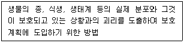
4과목: 경관생태학
61. 갯벌에 대한 설명으로 가장 옳은 것은?
62. 도로 건설, 도시 개발, 댐 건설 등 인간의 개발활동에 의하여 발생하는 파편화의 정도를 측정하는 항목이 아닌 것은?
63. 비오톱 지도화의 전 단계인 기초조사에서 파악되어야 할 사항이 아닌 것은?
64. 항공 탑재체에 의한 원격탐사 종류가 아닌 것은?
65. 가장자리효과(edge effect)에 대한 설명이 틀린 것은?
66. 환경영양평가의 현황조사는 생물서식공간을 중심으로 이루어지는 것이 바람직한데, 경관생태학적 측면의 이유로 가장 적합한 것은?
67. 대채습지의 의무 면적(Credit) 산정 시 반드시 고려해야 할 사항이 아닌 것은?
68. 댐건설이 환경에 미치는 영향이 아닌 것은?
69. 다음 중 세계 5대 갯벌지역에 해당하지 않는 것은?
70. 비오톱의 지도화를 선택적 지도화, 포괄적 지도화, 대표적 지도화로 구분할 때, 다음 중 포괄적 지도화의 설명에 해당하는 것은?
71. 숲에 임도와 등산로가 많아지는 것이 생태계의 종 다양성 측면에서 바람직하지 않은 이유로 가장 적합한 것은?
72. 도시생태계의 특성으로 거리가 가장 먼 것은?
73. 원격탐사자료의 분광 반사율(spectral reflectance)과 관련하여, 다음 중 일반적으로 가시광선과 적외선 부근에서 가장 높은 반사율을 나타내는 것은?
74. 서식지 파편화(habitat fragmentation)로 인해 생물다양성을 감소시키는 주요 원인이 아닌 것은?
75. 지리정보시스템(GIS)의 구성요소가 아닌 것은?
76. 다음 중 경관 전체로서의 기능 즉, 생물의 이동이나 경관요소 간의 관련성을 설명하는 것은?
77. 다음 중 서식처 가장자리의 모양에 따른 가장자리 효과를 나타낸 그림으로 거리가 가장 먼 것은?
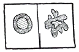
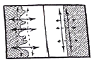
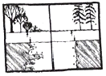
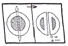
78. 임상도에서 얻을 수 있는 정보가 아닌 것은?
79. 파편화된 패치를 연결하는 방법으로 가장 부적합한 것은?
80. 경관을 이루는 기본 단위인 경관요소를 크게 3가지로 나눌 때 포함되지 않는 것은?
5과목: 자연환경관계법규
81. 야생생물 보호 및 관리에 관한 법령성 생물자원 보전시설을 설치·운영하고자 하는 자가 그 시설을 등록하고자 할 때 갖추어야 할 요건(기준)이 옳은 것은?
82. 자연공원법상 용어의 정의와 관련하여, ( )에 들어갈 내용에 해당하지 않는 것은?
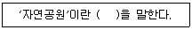
83. 국토의 계획 및 이용에 관한 법률상 용도지역에서의 용적률 최대한도 기준이 틀린 것은? (단, 조례로 정하는 내용은 고려하지 않는다.)
84. 자연환경보전법상 환경부장관이 수립해야 하는 자연환경보전 기본방침에 포함되어야 할 사항과 거리가 먼 것은?
85. 국토기본법상 국토종합계획의 수립 주기는?
86. 생물다양성 보전 및 이용에 관한 법령상 정의에 따라, 환경부장관이 지정·고시한 생태계교란생물에 해당되지 않는 것은?
87. 야생생물 보호 및 관리에 관한 법령상 멸종위기 야생생물 Ⅰ급(종류)에 해당하는 것은?
88. 농지법규상 실습지 등으로 농지를 소유할 수 있는 공공단체 등의 범위 기준에 해당하지 않는 것은?
89. 백두대간 보호에 관한 법률상 백두대간의 정의와 관련한 아래 내용에서, ( )에 들어갈 수 없는 것은? (단, 기타 대통령령으로 정하는 산줄기는 고려하지 않는다.)
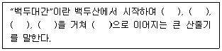
90. 자연환경보존법상 생태·자연도 작성을 위한 지역 구분에서 1등급 권역에 해당되지 않는 것은?
91. 환경정책기본법령상 환경부장관이 환경현황조사를 의뢰하거나 환경정보망의 구축·운영을 위탁할 수 있는 전문기관이 아닌 것은? (단, 그 밖에 환경부장관이 지정·고시하는 기관 및 단체는 제외한다.)
92. 독도 등 도서지역의 생태계 보전에 관한 특별법상 특정도서로 지정할 수 있는 기준이 아닌 것은?
93. 환경정책기본법령상 오존(O3)의 대기환경 기준으로 옳은 것은? (단, 8시간 평균치)
94. 다음은 환경정책기본법령상 수질 및 수생태계 상태별 생물학적 특성 이해표이다. 이에 가장 적합한 생물등급은?
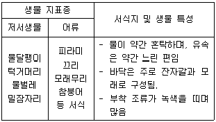
95. 독도 등 도서지역의 생태계 보전에 관한 특별법상 원칙적으로 특정도서 안에서 제한되는 행위가 아닌 것은? (단, 기타의 경우는 고려하지 않는다.)
96. 국토의 계획 및 이용에 관한 법률상 개발행위로 인하여 주변의 환경·경관·미관·문화재 등이 크게 오염되거나 손상될 우려가 있는 지역으로, 도시·군관리계획상 특히 필요하다고 인정되어 중앙도시계획위원회나 지방도시계획위원회의 심의를 거쳐 개발행위허가를 제한할 수 있는 기간 기준은? (단, 기타의 경우는 고려하지 않는다.)
97. 습지보전법상 국가습지심의위원회 심의 사항으로 거리가 가장 먼 것은?
98. 생물다양성 보전 및 이용에 관한 법률 시행령상 국가생물다양성전략 시행계획의 수립·시행에 관한 사항이다. ( ) 안에 들어갈 내용이 모두 옳은 것은?
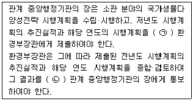
99. 자연환경보전법규상 생태계의 변화 관찰 대상 지역으로 거리가 가장 먼 것은?
100. 산지관리법령상 산지에 해당하지 않는 토지는?